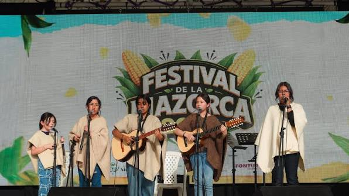
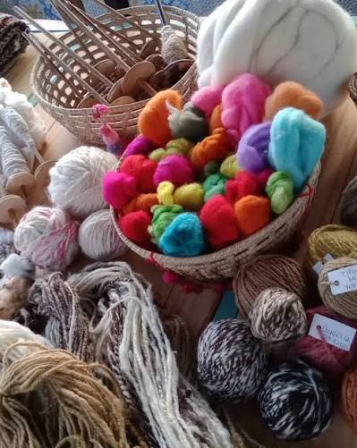
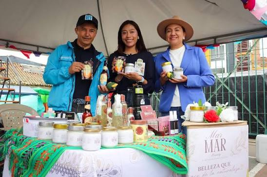

Festival de Música Campesina
Muestra musical de tiple, requinto y guitarras con agrupaciones locales de música carranguera y tradicional.
Actividades participativas, muestras artísticas y programas de formación patrimonial abiertos al público.

Muestra musical de tiple, requinto y guitarras con agrupaciones locales de música carranguera y tradicional.

Espacio interactivo where tradition bearers teach sheep wool preparation and natural dyeing.

Jornada de degustación de postres lácteos, masijos y bebidas tradicionales preparadas por cocineras locales.